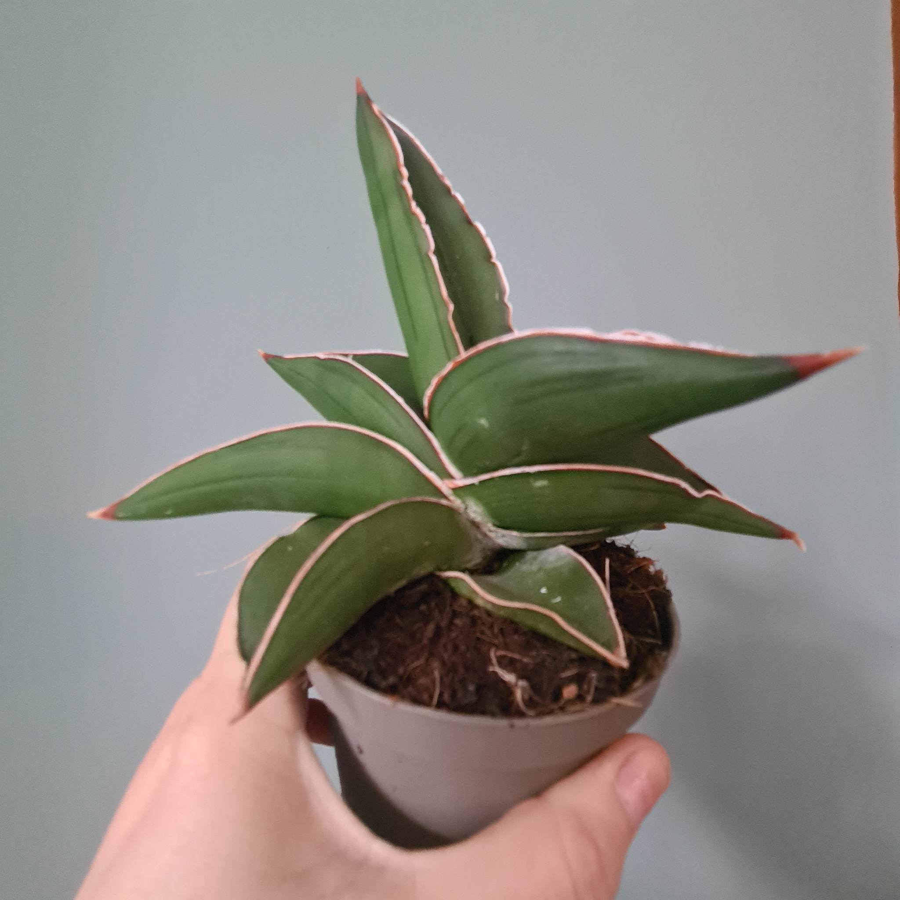

A common misconception is that people may think that they only get the benefits of nature only from going outside. However even though that is highly beneficial, you can also bring the benefits of nature inside your home for a small price too depending on what you may find! Keep scrolling for more information.
Watering plants in a pot that fits them well should be done when the top half of the soil feels dry to the touch. Depending on the region of origin, different plants have varying watering needs. Overwatering is the most common cause of house plant death, therefore it's better to water your plant moderately. When is it time to repot your indoor plant? The secret to knowing whether to repot your plant is to look at its roots. If they are circling inside the current container, it's time to repot it. Repotting your plant is best done in the spring, but it shouldn't harm it if you do it at any other time season. Make sure to remove any withered leaves and/or faded flowers, so that the plant is healthy and looking its best. Don’t forget that your plant needs plenty of sunlight around the whole plant so be sure to rotate the plant, so it gets sunlight evenly.
Useful info
Did you know that indoor gardening and houseplants can also provide benefits to improve your health & wellbeing as well? That means you can stay warm indoors and still reap the physical and mental benefits – win!
A study published in the Journal of Physiological Anthropology found that plants in your home or office can make you feel more comfortable, soothed, and natural.
In the study, participants were given two different tasks: repotting a houseplant or completing a short computer-based task. After each task, researchers measured the biological factors associated with stress, including heart rate and blood pressure.
They found that the indoor gardening task lowered the stress response in participants. The computer task, on the other hand, caused a spike in heart rate and blood pressure, even though the study participants were young men well-accustomed to computerized work.
Researchers concluded that working with plants could reduce both physiological and psychological stress.
Nature
Spending time in green space or bringing nature into your everyday life can benefit both your mental and physical wellbeing. For example doing activities such as growing your own plants and bringing them indoors can:
improve your mood, reduce feelings of stress or anger, feel more relaxed, and many more. Since the Covid-19 Pandemic, our time indoors has drastically increased to around 95% for the average person, therefore now that we're indoors much more and missing out on natural element, it takes a concious effort to keep nature in our lives. And the ideal solution is through adding nature in our homes or workplace.

Not only is the Snake Plant super easy going, it also helps improve the quality of sleep by producing oxygen at night and removing carbon dioxide. This can result in a more restful and refreshing sleep, so it's recommended to place your Snake Plant in the bedroom!
Not only can fresh air produced by a cactus make us more productive, but it can also help us with treating the constantly recurring headaches. By having cacti plants inside the house, you could reduce the amount of air impurities by over 50% by lowering the amount of dust and bacterial build-up.
Local garden centres
These are some local garden centres from where you can buy plants and ask for any other additional help regarding bringing the outside in, and they have good reviews as well.
About us
Our goal is to encourage environmentally friendly lifestyles. We do this by designing campaigns that make environmental actions desirable. We disrupt the status quo to raise awareness, nudge behaviours and shape systems. To learn more about us visit the website below.